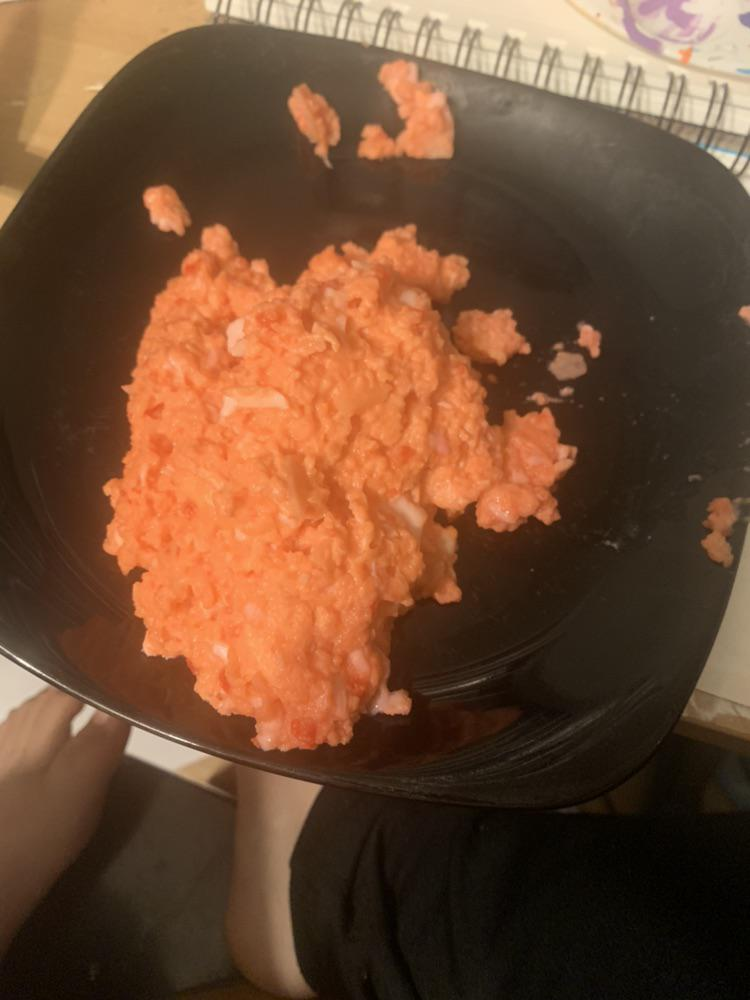

Hot Cheeto Scrambled Eggs

INGREDIENTS
- 2 Farm fresh eggs (chicken)
- Butter
- Salt and pepper to taste
- 1 bag of Hot Cheetos (20.6 oz.)
DIRECTIONS
- Bring a skillet to medium heat; add pat of butter, coat and allow to brown.
- Scramble eggs in bowl, crush cheetos into fine powder and stir in. For extra fine powder, chew cheetos before adding.
- Introduce scrambled cheeto egg mixutre to pan, stir steadily until reaching desired consistency.
- Remove from heat. Let rest 1 minute and season; suggested pairing of Mountain Dew (we reccomend Baja Blast).
Nutrition Facts
Yes